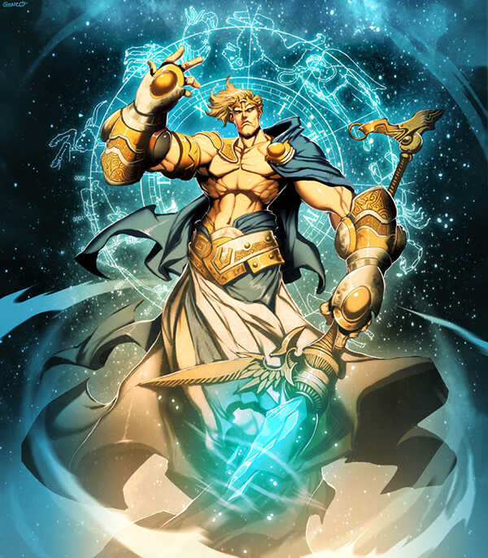

URANO
El más frío del sistema solar

Urano es el séptimo planeta del sistema solar, el tercero de mayor tamaño,
y el cuarto más masivo. Aunque es detectable a simple vista en el cielo
nocturno, no fue catalogado como planeta por los astrónomos de la antigüedad
debido a su escasa luminosidad y a la lentitud de su órbita. William Herschel
anunció su descubrimiento el 13 de marzo de 1781, ampliando las fronteras
entonces conocidas del sistema solar, por primera vez en la historia moderna.
Urano es también el primer planeta descubierto por medio de un telescopio.
Urano es similar en composición a Neptuno, y los dos tienen una composición
diferente de los otros dos gigantes gaseosos (Júpiter y Saturno). Por ello,
los astrónomos a veces los clasifican en una categoría diferente, LOS GIGANTES HELADOS.
NOMBRE Y MITOLOGÍA
El nombre Urano fue otorgado en honor de la divinidad griega del
cielo Urano (del griego antiguo Οὐρανός), el padre de Crono (Saturno) y el
abuelo de Zeus (Júpiter).
En el principio cuando la diosa Gea emergió del vació, engendro desde su interior a tres
Dioses primordiales, pero el primero fue Urano dios del cielo, la tierra y el cielo se
enamoraron y tomaron formas corpóreas, representaciones de si mismos que utilizaban para relacionarse.
Poco después de que Gea creara a los otros primordiales, Ponto, Tartaro, Ourea y Urano dios del cielo,
la diosa de la tierra para poblar el mundo y deseosa de crear seres vivos que mantuvieran un equilibrio
perfecto en ella, decidió mezclarse con sus hijos, el cielo y las aguas.
La profecia de Urano
Junto a Urano comenzó a tener relaciones y juntos procrearon a los Titanes. Todo parecía ir muy bien, los Titanes poco a poco ayudaron a dar forma al mundo y a llenarlo de vida. No obstante Urano tuvo un sueño profético en el que se le revelaba que uno de sus hijos lo destronaría del poder, asustado Urano ordeno a Gea que mantuviera a sus hijos encerrados dentro de ella. Esto no le gusto a la diosa, por lo que, trato de hacer que sus hijos se revelaran contra el, sin embargo, sus retoños temían al poder de Urano y no se atrevieron a ir contra el, solo uno, el más pequeño, Cronos convencido por su madre se atrevió a revelarse contra su padre.Gea le dio una Oz de piedra a Cronos con la que corto los testículos de Urano y este grito tan fuerte de dolor que se escucho por todo el mundo, sus órganos cayeron al mar, donde se convirtieron en espuma, de esta broto la diosa del amor Afrodita y las aguas se tiñeron de rojo por su sangre derramada. Desangrado y habiendo perdido su virilidad el dios perdió su forma física y se convirtió en las nubes y el aire, capaz de verlo todo, pero incapaz de hacer algo. Su ultima acción fue condenar a su hijo a correr el mismo destino que él, traicionado y asesinado por uno de sus hijos. Así es como termina la historia del dios Urano quien fuera el primer rey de los dioses. 